정보처리산업기사 (2014-03-02 기출문제)
1과목: 데이터 베이스
1. 다음과 같은 중위식(infix)을 후위식(postfix)으로 올바르게 표현한 것은?
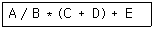
- + * / A B + C D E
- C D + A B / * E +
- / * + + A B C D E
- A B / C D + * E +
(정답률: 75%)

2. 학생(STUDENT) 테이블에 컴퓨터정보과 학생 120명, 인터넷정보과 학생 160명, 사무자동화과 학생 80명에 관한 데이터가 있다고 했을 때, 다음에 주어지는 SQL문 (ㄱ), (ㄴ), (ㄷ)을 각각 실행시키면 결과 튜플 수는 각각 몇 개 인가?(단, DEPT는 학과 컬럼명임)
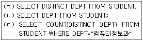
- (ㄱ) 3, (ㄴ), 360, (ㄷ) 1
- (ㄱ) 360, (ㄴ), 3, (ㄷ) 120
- (ㄱ) 3, (ㄴ), 360, (ㄷ) 120
- (ㄱ) 360, (ㄴ), 3, (ㄷ) 1
(정답률: 55%)
3. 다음 자료 구조 중 나머지 셋과 성격이 다른 하나는?
- 스택(stack)
- 트리(tree)
- 큐(queue)
- 데크(deque)
(정답률: 82%)
4. 데이터베이스 설계 단계 중 물리적 설계에 대한 설명으로 옳지 않은 것은?
- 개념적 설계 단계에서 만들어진 정보 구조로부터 특정 목표 DBMS가 처리할 수 있는 스키마를 생성한다.
- 다양한 데이터베이스 응용에 대해서 처리 성능을 얻기 위해 데이터베이스 파일의 저장 구조 및 액세스 경로를 결정한다.
- 물리적 저장장치에 저장할 수 있는 물리적 구조의 데이터로 변환하는 과정이다.
- 물리적 설계에서 옵션 선택시 응답시간, 저장 공간의 효율화, 트랜잭션 처리율 등을 고려하여야 한다.
(정답률: 57%)
5. 데이터베이스의 정의와 거리가 먼 것은?
- Redundancy Data
- Stored Data
- Operational Data
- Shared Data
(정답률: 64%)
6. A person responsible for the design and management of the database and for deciding the storage and access strategy. Who is this?
- System analyzer
- DBA
- Programmer
- Custom engineer
(정답률: 78%)
7. 다음의 정의와 관련된 용어는?
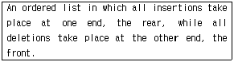
- stack
- tree
- queue
- list
(정답률: 64%)
8. 릴레이션의 특징으로 옳은 내용 모두를 나열한 것은?
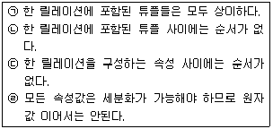
- (ㄱ), (ㄹ)
- (ㄱ), (ㄴ), (ㄷ)
- (ㄱ), (ㄴ), (ㄹ)
- (ㄱ), (ㄴ), (ㄷ), (ㄹ)
(정답률: 73%)
9. 다음 그림에서 트리의 차수는?
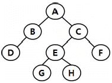
- 2
- 3
- 4
- 8
(정답률: 73%)
10. 색인 순차 파일(Indexed Sequential Access Method file) 의 색인 구역으로 옳은 것은?
- Track Index, Cylinder Index, Master Index
- Primary Data Index, Overflow Index, Master Index
- Track Index, Cylinder Index, Primary Data Index
- Cylinder Index, Master Index, Overflow Index
(정답률: 78%)
11. 다음 SQL 명령 중 DML에 해당하는 것으로만 나열된 것은?
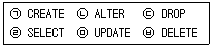
- (ㄱ), (ㄴ), (ㄷ)
- (ㄴ), (ㄹ), (ㅁ), (ㅂ)
- (ㄷ), (ㅂ)
- (ㄹ), (ㅁ), (ㅂ)
(정답률: 74%)
12. 뷰(View)를 사용하는 목적이 아닌 것은?
- 특정 집합의 우선 처리 등 튜닝된 뷰 생성으로 수행도의 향상 도모
- 데이터 보정작업, 처리과정 시험 등 임시적인 작업을 위한 활용
- 조인문의 사용 최소화로 사용상의 편의성 최대화
- 비정형적인 규칙의 정형화를 위하여 중간집합 생성으로 복잡화 유도
(정답률: 79%)
13. 삽입(insertion) 정렬을 사용하여 다음의 자료를 오름차순으로 정렬하고자 한다. 2회전 후의 결과는?(오류 신고가 접수된 문제입니다. 반드시 정답과 해설을 확인하시기 바랍니다.)
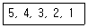
- 4, 5, 3, 2, 1
- 2, 3, 4, 5, 1
- 3, 4, 5, 2, 1
- 1, 2, 3, 4, 5
(정답률: 74%)
14. 관계해석에 대한 설명으로 옳지 않은 것은?
- 프레디키트 해석(predicate calculus)으로 질의어를 표현한다.
- 원하는 정보와 그 정보를 어떻게 유도하는가를 기술하는 절차적인 언어이다.
- 튜플 관계해석과 도메인 관계해석이 있다.
- 기본적으로 관계해석과 관계대수는 관계 데이터베이스를 처리하는 기능과 능력면에서 동등하다.
(정답률: 68%)
15. 논리적 설계 단계에 해당하지 않는 것은?
- 논리적 데이터 모델로 변환
- 트랜잭션 인터페이스 설계
- 스키마의 평가 및 정제
- 접근 경로 설계
(정답률: 58%)
16. 널 값(null value)에 대한 설명으로 옳지 않은 것은?
- 정보의 부재를 나타낼 때 사용하는 특수한 데이터 값이다.
- 아직 알려지지 않은 모르는 값이다.
- 공백(space)과는 다른 의미이다.
- 영(zero)과 같은 값이다.
(정답률: 82%)
17. 데이터베이스의 특성으로 거리가 먼 것은?
- 데이터베이스 환경 하에서 데이터 참조는 데이터베이스에 저장된 데이터 값에 의해서가 아니라, 사용자가 요구하는 레코드들의 위치나 주소에 의해 참조된다.
- 데이터베이스는 수시적이고 비정형적인 질의에 대하여 실시간 처리로 빠른 응답이 가능해야 한다.
- 새로운 데이터의 삽입, 삭제, 갱신으로 항상 최신의 데이터를 유지해야 한다.
- 데이터베이스는 서로 다른 목적을 가진 여러 응용자를 위한 것이므로 다수의 사용자가 동시에 같은 내용의 데이터를 이용할 수 있어야 한다.
(정답률: 62%)
18. 순차파일에 대한 설명으로 옳지 않은 것은?
- 어떠한 입출력 매체에서도 처리가 가능하다.
- 필요한 레코드를 삽입, 삭제, 수정하는 경우 파일을 재구성해야 하므로 파일 전체를 복사해야 한다.
- 파일 검색시 효율이 좋다.
- 배치(batch) 처리 중심의 업무에 많이 사용된다.
(정답률: 59%)
19. 계층형 데이터 모델의 특징이 아닌 것은?
- 개체 타입 간에는 상위와 하위 관계가 존재한다.
- 개체 타입들 간에는 사이클(cycle)이 허용된다.
- 루트 개체 타입을 가지고 있다.
- 링크를 사용하여 개체와 개체 사이의 관계성을 표시한다.
(정답률: 59%)
20. 데이터 모델에 관한 설명 중 옳지 않은 것은?
- 관계 데이터 모델은 개체와 관계 모두가 테이블로 표현된다.
- 계층 데이터베이스는 부자관계(parent-child relationship)를 나타내는 트리 형태의 자료 구조로 표현된다.
- 네트워크 데이터베이스는 오너-멤버관계(owner-member relationship)를 나타내는 트리 구조로 표현된다.
- 데이터 모델은 데이터, 데이터의 관계, 데이터의 의미 및 일관성 제약 조건 등을 기술하기 위한 개념적 도구들의 모임이다.
(정답률: 47%)
2과목: 전자 계산기 구조
21. 인터럽트의 발생 원인이 아닌 것은?
- 오퍼레이터 조작
- 정전
- 불법적인 인스트럭션의 수행
- 부프로그램의 호출
(정답률: 66%)
22. 산술 연산과 논리 연산 동작을 수행한 후 결과를 축적하는 레지스터(register)를 무엇이라 하는가?
- 누산기
- 인덱스 레지스터
- 플래그 레지스터
- RAM
(정답률: 76%)
23. CPU가 인터럽트 발생시 서비스 루틴의 분기 주소를 결정하는 방법으로 인터럽트의 원인에 의해서 분기 정보를 얻게 되는 방식은?
- 핸드셰이킹
- 폴링
- 데이지체인
- 벡터 인터럽트
(정답률: 49%)
24. 연산의 종류를 unary연산과 binary연산으로 구별할 때 다음 중 binary연산을 하는 연산자가 아닌 것은?
- Complement
- OR
- AND
- Exclusive OR
(정답률: 74%)
25. 8진법의 수 256과 542를 더한 값은?
- (798)8
- (1000)8
- (1020)8
- (A20)8
(정답률: 65%)
26. 부동소수점 표현의 수들 사이의 곱셈 알고리즘 과정에 해당하지 않은 것은?
- 0(zero) 인지 여부를 조사한다.
- 가수의 위치를 조정한다.
- 가수를 곱한다.
- 결과를 정규화 한다.
(정답률: 45%)
27. 다음 3가지 연산자(operator)가 혼합되어 나오는 식에서 시행(연산) 순서는?(단, 가장 왼쪽에 기술된 것이 가장 우선순위가 높다.)
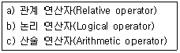
- a → b → c
- b → a → c
- c → a → b
- a → c → b
(정답률: 47%)
28. 어떤 메모리가 8K x 8 크기를 가질 때 데이터의 입·출력 선과 어드레스 선은 몇 개인가?
- 입·출력선: 8, 어드레스 선: 13
- 입·출력선: 8, 어드레스 선: 8
- 입·출력선: 4, 어드레스 선: 8
- 입·출력선: 4, 어드레스 선: 13
(정답률: 54%)
29. 명령수행을 위한 메이저 상태에 대한 설명 중 옳은 것은?
- 실행상태는 간접주소 방식의 경우에만 수행된다.
- 기억장치내의 명령어를 가져오는 것을 인출(fetch) 상태라 한다.
- CPU의 현재 상태를 보관하기 위한 기억장치 접근을 indirect 상태라 한다.
- 명령어의 종류를 판별하는 것을 indirect 상태라 한다.
(정답률: 63%)
30. 주기억 장치와 입·출력 장치 간에는 시간·공간적 특성 차이가 있다. 이에 해당되지 않는 것은?
- 동작의 속도
- 버스 구성
- 정보의 단위
- 동작의 자율성
(정답률: 41%)
31. 자기디스크 장치의 구성 요소가 아닌 것은?
- 읽고/쓰기 헤드(read/write head)
- 디스크(disk)
- 실린더(cylinder)
- 액세스 암(access arm)
(정답률: 44%)
32. 주소지정방식에 대한 설명으로 옳지 않은 것은?
- immediate mode는 피연산자가 그 명령어 자체내에 있다.
- direct address mode에서는 명령어의 주소 부분이 그대로 유효 명령어의 주소 필드에 의해서 직접적으로 주어진다.
- indirect address mode에서는 명령어의 주소 필드가 가리키는 주소에 유효번지가 있다.
- relative address mode에서 유효번지를 구하려면 명령어의 주소 부분에 index register의 내용을 더해야 한다.
(정답률: 49%)
33. 논리식 Y = A+AB+AC 를 간략화 하면?
- Y = A
- Y = B
- Y = A+B
- Y = A+C
(정답률: 67%)
34. 인터럽트(interrupt)의 우선순위에 관한 설명 중 옳지 않은 것은?
- 우선순위 부과는 소프트웨어에 의한 방법과 하드웨어에 의한 방법이 있다.
- 소프트웨어에 의한 방법에는 폴링 방법을 이용하며 인터럽트 반응속도가 빠르다.
- 주변장치들의 종류에 따라 우선순위를 부여할 수 있으며 자기디스크와 같이 속도가 빠른 장치에 높은 등급을 부여한다.
- 하드웨어에 의한 방법 중 daisy chain은 인터럽트 반응 속도가 비교적 빠르지만 비용이 많이 드는 단점이 있다.
(정답률: 46%)
35. 다음 ( ) 안에 가장 알맞은 내용은?
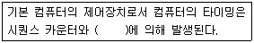
- 레지스터
- 누산기
- 플립플롭
- 디코더
(정답률: 36%)
36. 프로그램의 진행에 대한 제어 명령에 속하지 않은 것은?
- Jump
- Load
- Branch
- Interrupt
(정답률: 44%)
37. 기억장치로부터 명령어를 인출하여 해독하고, 해독된 명령어를 실행하기 위해 제어 신호를 발생시키는 각 단계의 세부 동작을 무엇이라 하는가?
- Fetch operation
- Control operation
- Macro operation
- Micro operation
(정답률: 57%)
38. 명령수행 사이클에 대한 설명 중 옳지 않은 것은?
- 모든 cycle에는 그 끝부분에서 interrupt 사이클로 들어갈 것인가의 여부를 판단하게 되어 있다.
- indirect 사이클이 끝난 뒤에는 반드시 execute 사이클이 이어진다.
- interrupt 사이클이 끝나면 반드시 fetch 사이클로 들어간다.
- fetch 사이클 다음에는 indirect 사이클이나 execute 사이클이 이어진다.
(정답률: 36%)
39. 다음 중 응용 프로그래머가 프로그램을 작성할 때 직접 레지스터의 내용을 다룰 수 있는 레지스터는?
- Index Register
- Instruction Register
- MBR(Memory Buffer Register)
- MAR(Memory Address Register)
(정답률: 45%)
40. (1001)2을 그레이코드(Gray Code)로 변환하면?
- 1100
- 1110
- 1101
- 1111
(정답률: 62%)
3과목: 시스템분석설계
41. 코드 설계 순서로 옳은 것은?
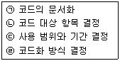
- (ㄱ) → (ㄴ) → (ㄷ) → (ㄹ)
- (ㄷ) → (ㄹ) → (ㄱ) → (ㄴ)
- (ㄴ) → (ㄷ) → (ㄹ) → (ㄱ)
- (ㄹ) → (ㄷ) → (ㄴ) → (ㄱ)
(정답률: 72%)
42. 문서화(Documentation)의 설명 중 적합하지 않은 것은?
- 프로그램 내에도 문서화를 할 수 있다.
- 문서도 시스템 구성요소의 하나이다.
- 문서화는 시스템 개발 과정의 작업이라고 할 수 있다.
- 문서화는 시스템이 모두 개발된 후에 일괄적으로 작업해야 정확하다.
(정답률: 72%)
43. 프로세스 설계시 유의사항이 아닌 것은?
- 오퍼레이터 개입을 최소화한다.
- 하드웨어의 기기구성과 처리 능력을 고려한다.
- 신뢰성과 정확성을 고려한다.
- 분류처리는 가급적 최대화한다.
(정답률: 73%)
44. 코드(code) 설계시 유의사항으로 거리가 먼 것은?
- 다양성이 있어야 한다.
- 컴퓨터 처리에 적합하여야 한다.
- 체계성이 있어야 한다.
- 확장성이 있어야 한다.
(정답률: 69%)
45. 프로세스의 표준 처리 패턴 중 특정의 조건을 제시하여 그 조건에 부합되는 데이터를 파일 중에서 추출해 내는 처리로서, 정보검색을 위한 필수적인 기능인 것은?
- Conversion
- Merge
- Extract
- Matching
(정답률: 55%)
46. 입력 정보 투입 설계시 검토사항과 거리가 먼 것은?
- 투입 주기 결정
- 투입 시기 결정
- 투입(입력) 장치 결정
- 매체화 장치 결정
(정답률: 63%)
47. 다음의 파일 설계 단계 중 가장 마지막에 수행되는 것은?
- 파일 항목 검토
- 파일 특성 조사
- 편성법 검토
- 파일 매체 검토
(정답률: 66%)
48. 객체지향 기법에서 객체의 데이터와 오퍼레이션을 하나로 묶고 실제 구현되는 내용은 외부에 감추는 행위에 대한 설명으로 거리가 먼 것은?
- 정보의 손상과 오용을 방지함
- 상위 클래스의 메소드를 비롯한 모든 속성을 하위 클래스가 물려받을 수 있음을 의미함
- 연산 방법이 바뀌어도 연산 자체에는 영향을 주지 않음
- 자료가 변해도 다른 객체에 영향을 주지 않기 때문에 독립성을 보장함
(정답률: 47%)
49. 파일 편성 설계 중 랜덤 편성 방법에 대한 설명으로 옳지 않은 것은?
- 평균접근 시간 내에 검색이 가능하므로 처리 시간이 빠르다.
- 레코드의 키 값으로부터 레코드가 기억되어 있는 기억 장소의 주소를 직접 계산함으로써 원하는 레코드를 직접 접근할 수 있다.
- 특정 레코드에 대한 직접 접근이 가능하므로 대화형 처리에 많이 이용한다.
- 키-주소변환방법에 의한 충돌 발생이 없으므로 이를 위한 기억공간 확보가 필요 없다.
(정답률: 66%)
50. 코드화 대상 자료 전체를 계산하여 이를 필요로 하는 분류 단위로 블록을 구분하고, 각 블록 내에서 순서대로 번호를 부여하는 방식으로 적은 자릿수로 많은 항목의 표시가 가능하고 예비코드를 사용할 수 있어 추가가 용이한 코드로서, 구분 순차코드라고도 하는 것은?
- 순차(sequence) 코드
- 표의숫자(significant digit) 코드
- 블록(block) 코드
- 연상(mnemonic) 코드
(정답률: 52%)
51. 체크 시스템은 컴퓨터 입력 단계의 체크와 계산 처리 단계의 체크로 구분할 수 있다. 다음 중 컴퓨터 입력 단계의 체크에 해당하지 않는 것은?
- 불일치 레코드 체크(Unmatched record check)
- 일괄 합계 체크(Batch total check)
- 순차 체크(Sequence check)
- 균형 체크(Balance check)
(정답률: 46%)
52. 시스템의 특성 중 다음 설명에 해당하는 것은?
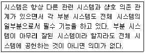
- 목적성
- 종합성
- 제어성
- 자동성
(정답률: 69%)
53. 처리 시간 견적 방법 중 프로세스 차트를 기초로 하여 수행하며, 계산 방법은 각 주변장치의 동작 시간 및 중앙 처리 장치의 동작 시간을 중심으로 계산하는 것은?
- 출력에 의한 계산 방법
- 입력에 의한 계산 방법
- 추정에 의한 계산 방법
- 컴퓨터에 의한 계산 방법
(정답률: 31%)
54. 다음 중 입력 설계시 가장 먼저 설계하는 항목은?
- 입력 정보 내용의 설계
- 입력정보 매체화에 관한 설계
- 입력 정보 투입의 설계
- 입력 정보 수집의 설계
(정답률: 58%)
55. 출력정보의 내용 설계시 고려사항으로 거리가 먼 것은?
- 출력항목의 문자표현 방법 결정
- 출력형식 결정
- 출력항목에 대한 집계 방법 결정
- 출력정보의 오류검사 방법 결정
(정답률: 36%)
56. 자료 사전에서 자료의 생략시 사용하는 기호는?
- ( )
- #
- &
- { }
(정답률: 61%)
57. 색인 순차 편성에서의 각 구역에 대한 설명으로 옳지 않은 것은?
- 트랙 인덱스 구역 – 기본 데이터 구역의 한 트랙상에 기록되어 있는 데이터 레코드 중에서 최대 키 값과 그 주소가 기록되어 있다.
- 실린더 인덱스 구역 – 처리해야 할 레코드가 어느 실린더에 기록되어 있는지를 판별할 수 있는 자료를 갖고 있다.
- 마스터 인덱스 구역 – 실린더 오버플로우 구역에 다시 오버플로우가 발생할 경우를 대비하여 만들어 놓은 공간이다.
- 기본 데이터 구역 – 실제 데이터 레코드가 기록된 구역이다.
(정답률: 53%)
58. 시스템 설계시 필요한 과정의 나열이 순서에 옳은 것은?
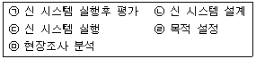
- (ㄴ) → (ㅁ) → (ㄹ) → (ㄷ) → (ㄱ)
- (ㄷ) → (ㄹ) → (ㄴ) → (ㅁ) → (ㄱ)
- (ㄹ) → (ㅁ) → (ㄴ) → (ㄷ) → (ㄱ)
- (ㄴ) → (ㅁ) → (ㄹ) → (ㄱ) → (ㄷ)
(정답률: 70%)
59. 모듈화의 특징으로 옳은 내용 모두를 나열한 것은?(일부 컴퓨터에서 괄호뒤의 특수문자가 보이지 않아서 괄호뒤에 다시 표기 하여 둡니다.)
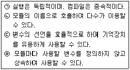
- (ㄱ), (ㄹ)
- (ㄱ), (ㄴ), (ㄷ)
- (ㄴ), (ㄷ), (ㄹ)
- (ㄱ), (ㄴ), (ㄷ), (ㄹ)
(정답률: 51%)
60. 소프트웨어 개발주기 모델 중 폭포수형의 특징으로 옳지 않은 것은?
- 개발 과정 중에 발생하는 새로운 요구나 경험을 반영하기 용이하다.
- 단계별 정의가 분명하고, 각 단계별 산출물이 명확하다.
- 두 개 이상이 과정이 병행하여 수행되지 않는다.
- 소프트웨어 개발 과정의 앞 단계가 끝나야만 다음 단계로 넘어갈 수 있다.
(정답률: 55%)
4과목: 운영체제
61. 교착상태 해결 방법 중 점유 및 대기 방지, 비선점 방지, 환형대기 방지와 관계되는 것은?
- Avoidance
- Detection
- Prevention
- Recovery
(정답률: 51%)
62. 강결합(Tightly-coupled) 시스템과 약결합(Loosely-coupled) 시스템에 대한 설명으로 옳지 않은 것은?
- 약결합 시스템은 각각의 시스템이 별도의 운영체제를 가진다.
- 강결합 시스템은 각 프로세서마다 독립된 메모리를 가진다.
- 강결합 시스템은 하나의 운영체제가 모든 처리기와 시스템 하드웨어를 제어한다.
- 약결합 시스템은 메시지를 사용하여 상호 통신을 한다.
(정답률: 53%)
63. RR(Round-Robin) 스케줄링 기법에서 시간 할당량에 대한 설명으로 옳지 않은 것은?
- 시간 할당량이 너무 작으면 오버 헤드의 발생이 적어진다.
- 시간 할당량이 너무 작으면 문맥교환이 자주 일어나게 된다.
- 시간 할당량이 너무 크면 FIFO 기법과 거의 같은 형태가 된다.
- 시간 할당량이 너무 작으면 시스템은 대부분의 시간을 프로세서의 스위칭에 소비하고 실제 사용자들의 연산은 거의 처리할 수 없는 결과가 초래된다.
(정답률: 59%)
64. 스레드에 대한 설명으로 옳지 않은 것은?
- 하드웨어, 운영체제의 성능과 응용 프로그램의 처리율을 향상시킬 수 있다.
- 실행 환경을 공유시켜 기억 장소의 낭비가 줄어든다.
- 하나의 프로세스에 하나 이상의 스레드는 존재할 수 없다.
- 프로세스들 간의 통신이 향상된다.
(정답률: 70%)
65. 각 페이지마다 계수기나 스택을 두어 현 시점에서 가장 오랫동안 사용하지 않은 페이지를 교체하는 페이지 교체 알고리즘은?
- LFU
- LRU
- FIFO
- SCR
(정답률: 65%)
66. HRN 스케줄링 기법 사용시 우선순위가 가장 낮은 작업 번호는?
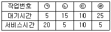
- (ㄱ)
- (ㄴ)
- (ㄷ)
- (ㄹ)
(정답률: 63%)
67. 파일의 내용을 화면에 표시하는 UNIX 명령은?
- mv
- cat
- mkfs
- ls
(정답률: 66%)
68. 운영체제에 대한 설명으로 옳지 않은 것은?
- 컴퓨터 시스템을 편리하게 이용할 수 있도록 한다.
- 컴퓨터 하드웨어를 효율적인 방법으로 이용할 수 있다.
- 사용자가 프로그램을 수행할 수 있는 환경을 제공 한다.
- 고급 언어로 작성된 원시 프로그램을 번역한다.
(정답률: 75%)
69. 다음 접근제어리스트에서 “파일2”가 처리될 수 없는 것은?(단, R=읽기, W=쓰기, P=인쇄, L=공유)
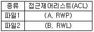
- 읽기
- 쓰기
- 인쇄
- 공유
(정답률: 74%)
70. 3 페이지가 들어갈 수 있는 기억장치에서 다음과 같은 순서로 페이지 번호가 참조될 때 FIFO 기법을 사용하면 최종적으로 기억공간에 남는 페이지 번호는?(단, 현재 기억 장치는 모두 비어 있다고 가정한다.)
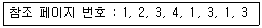
- 3, 2, 1
- 4, 1, 2
- 2, 3, 4
- 4, 1, 3
(정답률: 66%)
71. UNIX 파일 시스템 구조에서 파일 소유자의 사용자 번호 및 그룹 번호, 데이터가 저장된 블록의 주소 정보를 보관하고 있는 것은?
- 데이터 블록
- I-node 블록
- 슈퍼 블록
- 부트 블록
(정답률: 60%)
72. 운영체제의 운용 기법 중 데이터 발생 즉시 또는 데이터 처리 요구가 있는 즉시 처리하여 결과를 산출하는 방식은?
- 실시간 처리 시스템
- 분산 처리 시스템
- 일괄 처리 시스템
- 시분할 시스템
(정답률: 75%)
73. 다음의 정의가 의미하는 것은?
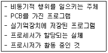
- 프로세스
- 운영체제
- 워킹 셋
- 스케줄러
(정답률: 74%)
74. 분산처리 운영 시스템의 설명으로 옳지 않은 것은?
- 시스템의 점진적 확장이 용이하다.
- 신뢰성, 가용성이 증대된다.
- 자원의 공유와 부하 균형이 가능하다.
- 중앙 집중형 시스템에 비해 보안 정책이 간소해진다.
(정답률: 60%)
75. 주기억장치 관리 기법 중 “Best Fit” 기법 사용시 20K의 프로그램은 주기억장치 영역 번호 중 어느 곳에 할당되는가?(단, 탐색은 위에서 아래로 한다.)
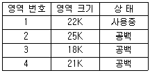
- 영역 번호 1
- 영역 번호 2
- 영역 번호 3
- 영역 번호 4
(정답률: 70%)
76. 세그먼테이션 기법에 대한 설명 중 옳지 않은 것은?
- 각 작업이 갖고 있는 세그먼테이션들에 대한 정보를 갖고 있는 세그먼트 맵 테이블이 필요하다.
- 각 세그먼트는 고유한 이름과 크기를 갖는다.
- 기억 장치의 사용자 관점을 보존하는 기억 장치 관리 기법이다.
- 하나의 작업을 똑같은 크기의 세그먼트라는 물리적인 단위로 나누어 주기억 공간의 페이지 프레임에 들어가도록 한다.
(정답률: 52%)
77. UNIX에서 사용하는 디렉토리 구조는?
- 1단계 디렉토리 구조
- 2단계 디렉토리 구조
- 트리 디렉토리 구조
- 비순환 그래프 디렉토리 구조
(정답률: 64%)
78. 작업 도착시간과 CPU 사용시간은 다음 표와 같다. SJF 스케줄링 기법을 사용할 경우 모든 작업들의 평균 대기 시간은 얼마인가?(단, 소수점 이하는 반올림 처리한다.)
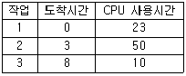
- 14
- 15
- 20
- 28
(정답률: 61%)
79. 파일 시스템의 일반적인 기능으로 거리가 먼 것은?
- 언어의 종류에 관계 없이 모든 원시 프로그램을 컴파일 가능하도록 한다.
- 사용자가 파일을 생성하고, 변경하고, 제거할 수 있도록 한다.
- 정보의 손실이나 파괴를 방지하기 위해 백업과 복구 능력을 갖추어야 한다.
- 사용하기 편리한 인터페이스를 제공해야 한다.
(정답률: 65%)
80. 디스크 헤드의 현 위치는 50 트랙이며, 안쪽 방향으로 진행 중이다. SSTF 방식을 사용할 경우 다음 디스크 대기 큐에서 가장 먼저 처리되는 트랙은?(단, 트랙번호가 작은 쪽이 안쪽 방향임)
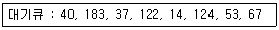
- 14
- 40
- 53
- 183
(정답률: 60%)
5과목: 정보통신개론
81. 주파수분할 다중화(FDM) 방식에서 보호대역(guard band)이 필요한 이유는?
- 신호의 세기를 크게 하기 위함이다.
- 주파수 대역폭을 넓히기 위함이다.
- 채널의 신호를 혼합하기 위함이다.
- 채널간의 간섭을 막기 위함이다.
(정답률: 71%)
82. OSI 참조모델 중 암호화, 코드변환 및 압축 등을 수행하는 계층은?
- 어플리케이션 계층
- 프레젠테이션 계층
- 세션 계층
- 데이터링크 계층
(정답률: 53%)
83. 비패킷형 단말기들을 패킷교환망에 접속이 가능하도록 데이터를 패킷으로 조립하고, 수신측에서는 분해 해주는 것은?
- PAD
- CSU
- DSU
- NIC
(정답률: 61%)
84. 데이터 통신 중 비동기 전송에 대한 설명으로 틀린 것은?
- 전송 시 start 비트와 stop 비트를 사용한다.
- 문자 위주와 비트 위주의 비동기 전송으로 나누어 진다.
- 한 번에 한 문자씩 전송함으로써 새로운 문자의 시작점에서 재동기를 이루도록 한다.
- 수신기는 자신의 클록신호를 사용하여 회선을 샘플링하여 각 비트 값을 읽어낸다.
(정답률: 30%)
85. 음성 정보의 교환을 주목적으로 하는 전화 서비스를 지원하기 위하여 구축된 통신망은?
- PSTN
- PSDN
- ISDN
- INT-2000
(정답률: 42%)
86. 집중화기(Concentrator)에 대한 설명으로 틀린 것은?
- m개의 입력회선을 n개의 출력회선으로 집중화하는 장치로, 입력 회선의 수가 출력 회선의 수보다 적다.
- 저속 장치들이 하나의 빠른 회선을 공유하여 사용할 수 있도록 해주는 것이다.
- 프로세서와 기억 기능을 포함하여 일종의 교환기 역할을 수행할 수도 있다.
- 데이터 압축 기능을 이용하여 더욱 효과적으로 고속의 데이터 전송이 가능하다.
(정답률: 48%)
87. 물리주소를 이용하여 논리주소로 변환시켜 주는 프로토콜은?
- RARP
- HTTP
- UTP
- TCP/IP
(정답률: 51%)
88. HDLC(High-level Data Link Control)의 링크 구성 방식에 따른 동작 모드로 틀린 것은?
- SRM
- ARM
- NRM
- ABM
(정답률: 41%)
89. ISDN에서 제공하는 베어러 서비스에 해당되는 것은?
- G4 FAX
- TV 화상회의
- 비디오 텍스
- 회선교환
(정답률: 47%)
90. LAN의 네트워크 형태(topology)에 따른 분류가 아닌 것은?
- BUS 형
- Star 형
- Packet 형
- Ring 형
(정답률: 70%)
91. 데이터 전송 용량을 늘리기 위한 방법으로 적합하지 않은 것은?
- 대역폭을 늘린다.
- S/N비를 작게 한다.
- 신호세력을 크게 한다.
- 잡음 세력을 줄인다.
(정답률: 60%)
92. IPv6의 특징으로 틀린 것은?
- IPv6 주소의 길이는 256비트이다.
- 암호화와 인증 옵션 기능을 제공한다.
- 프로토콜의 확장을 허용하도록 설계되었다.
- 흐름 레이블(Flow Label)이라는 항목이 추가 되었다.
(정답률: 60%)
93. 데이터 전송 시 오류검출 기법으로 틀린 것은?
- Parity Check
- Huffman Check
- Block Sum Check
- Cyclic Redundancy Check
(정답률: 52%)
94. PCM 방식에서 아날로그 신호를 디지털 신호로 변환하는 과정을 순서대로 나열한 것은?
- 표본화 – 부호화 – 양자화 - 복호화
- 표본화 – 양자화 – 부호화 - 복호화
- 부호화 – 표본화 – 양자화 - 복호화
- 표본화 – 복호화 – 양자화 - 부호화
(정답률: 71%)
95. 전송시간을 일정한 간격의 시간 슬롯(time slot)으로 나누고, 이를 주기적으로 각 채널에 할당하는 다중화 방식은?
- 주파수 분할 다중화
- 파장 분할 다중화
- 동기식 시분할 다중화
- 회선 분할 다중화
(정답률: 68%)
96. 데이터 터미널 장비(DTE: Data Terminal Equipment)의 기능이 아닌 것은?
- 일괄처리 기능
- 전송제어 기능
- 입·출력 기능
- 기억 기능
(정답률: 28%)
97. 패킷교환 방식에 대한 설명으로 틀린 것은?
- 패킷 단위로 전송한다.
- 저장-전달 방식을 사용한다.
- 데이터 그램과 가상회선 방식으로 구분한다.
- 전송 대역폭이 고정적이다.
(정답률: 64%)
98. 데이터 전송 시 오류가 검출되면 자동적으로 재전송을 요청하는 ARQ 기법에 해당하지 않는 것은?
- Stop-and-Wait ARQ
- Go-back-N ARQ
- Continue ARQ
- Selective Repeat ARQ
(정답률: 52%)
99. 데이터 전송 오류의 주요 원인으로 가장 거리가 먼 것은?
- 신호 감쇠
- 지연 왜곡
- 잡음
- 복조
(정답률: 65%)
100. TCP/IP 모델 중 응용 계층과 관련된 프로토콜이 아닌 것은?
- HTTP
- SNMP
- FTP
- UDP
(정답률: 49%)
1. 피연산자는 그대로 출력합니다.
2. 연산자는 스택에 넣습니다.
3. 연산자를 넣을 때, 스택의 top에 있는 연산자의 우선순위가 더 높거나 같으면 top의 연산자를 출력하고 pop한 후에 현재 연산자를 스택에 넣습니다.
4. 중위식을 모두 읽은 후에 스택에 남아있는 연산자를 모두 출력합니다.
위의 방법을 이용하여 주어진 중위식을 후위식으로 바꾸면 다음과 같습니다.
A B / C D + * E +
= A / B * (C + D) + E
= A B / C D + * E +
따라서 정답은 A B / C D + * E + 입니다.